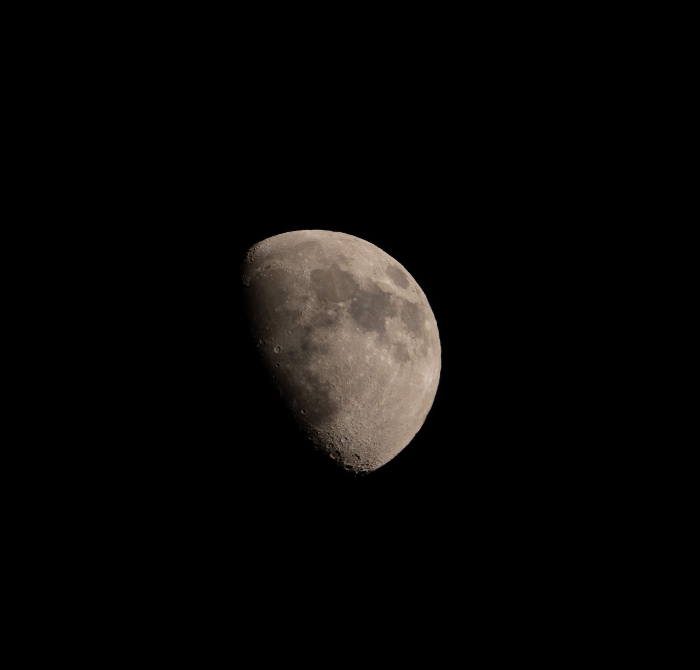

Colocando vários espaços entre as linhas e vendo o que acontece com o html!
A tag <p> e </p>
é uma tag especializada em conteúdos que
tenham muitos textos. Como artigos, blogs,
tutoriais, etc...
Construindo um outro parágrafo, mas que preciso que essse texto seja quebrado exatamente aqui, eu utilizo a tag
Aqui deve aparecer abaixo do texto acima porque utilizei o break rol <br>